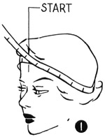
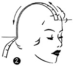
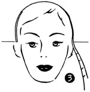
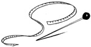

1952—How to Make Hats
by Ruby Carnahan
How to Take Head Measurements
MEASURING AROUND HEAD (ILLUS. 1)
Hats that fit the head are called headsize hats. Exact headsize measurements are required when making headsize hats. Start with tape line at center of forehead on hair line. Run tape line around head, under bulge at back of head and back to front to meet tape line again. This measurement is your correct head-size. Average headsize measurements range from 21" to 23" in half sizes.
MEASURING HEAD FROM BACK TO FRONT (ILLUS. 2)
Decide where you will wear hat, back or forward on head. Mark and start tape line on mark, run tape line over top of head and just over bulge on back of head. This is the back to front measurement and usually measures 9 1/2" to I0 1/2".
MEASURING HEAD FROM SIDE TO SIDE (ILLUS. 3)
Start tape line where edge of headsize will start over ears and run tape line over head to same point on opposite side over ear. This is the side to side measurement and usually measures 10" to 10 1/2".
NON-HEADSIZE HAT MEASUREMENTS
Non-headsize hats fit any size head. Head sizes measure from 18" to 21" dependent on style trend.
A season when non-headsize hats are very fashionable, they become very extreme, are perched high on the head with a 12" headsize. The smaller the hat the smaller the headsize on non-headsize hats.